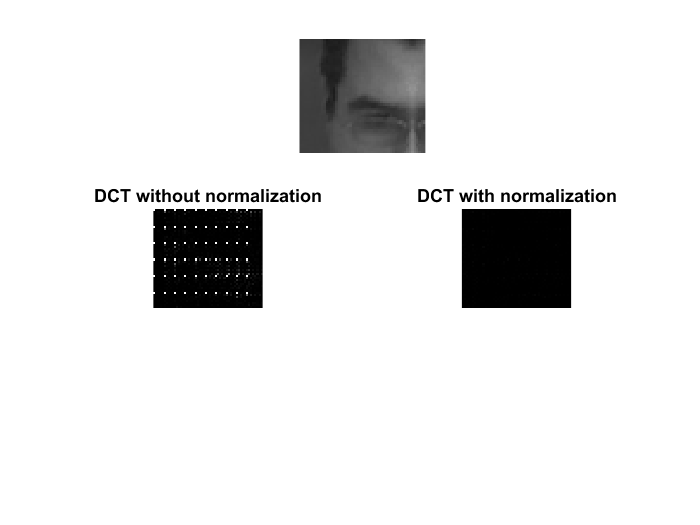

Contents
%%%%%%%%%%%%%%%%%%%%%%%%%%%%%%%%%%%%%%%%%%%%%%%%%%%%%%%%%%%%%
Algorithme de test
clear variables close all clc img = imread('img.pgm'); %img = imread('cameraman.tif'); if size(img,3)==3 % Convertion en nuance de gris si RGB avant img = rgb2gray(img); end regions = getRegions(img); R = regions(:,:,1); %%%%%%%%%%%%%%%%%%%%%%%%%%%%%%%%%%%%%%%%%%%%%%%%%%%%%%%%%%%%% % VARIABLES % pSize = 8; overflow = 3; %%%%%%%%%%%%%%%%%%%%%%%%%%%%%%%%%%%%%%%%%%%%%%%%%%%%%%%%%%%%% patches = getPatches(R, pSize, overflow);
On normalise les patches pour avoir 'zero mean and unit variance'
normPatch = patches; [vSize, nbrFeature] = size(normPatch); for i = 1:nbrFeature normPatch(:,i) = normDct(normPatch(:,i), pSize); end % %% 'select the 15 lower frequency components of the DCT coefficients' % % Pour chaque patch on ne garde que les 15 coef les + petits (c ça?) % for i = 1:nbrFeature % vector = sort(normPatch(:,i)); % % Ici on enlève tous les 0 et on garde les 15 plus petit % % ??? Que faire s'il y a moins de 15coef supérieur à 0? % %%% Que faut il choisir ? doublon ou pas ? % %vector = nonzeros(vector); % On garde que les coef > 0 % vector = unique(vector); % On garde que les coefs > 0 et pas de doublon % if size(vector) < 15 % On garde les 15 premier ou - % vector = vector(1:end); % else % vector = vector(1:15); % end % %TODO Bug, pas la même taille... % normPatch(:,i) = vector; % end
Affichage des résultats
imgF = getImgFromPatches(patches, size(R), overflow); imshow(imgF) figure imshow(normPatch)